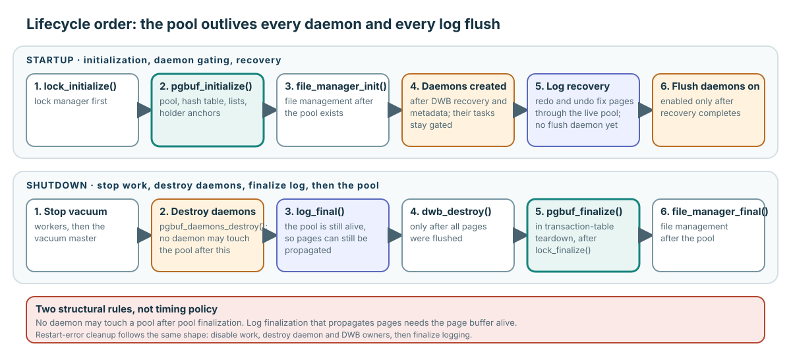

Startup and shutdown order

Create dependencies before enabling work; stop every consumer before destroying its service.

log_final() runs while page propagation remains available.log_final() with pool alivepgbuf_finalize()| Responsibility | Pinned range |
|---|---|
| Transaction-table initialization | log_tran_table.c:468–512 |
| Boot, recovery, restart cleanup | boot_sr.c:1974–2801 |
| Normal shutdown | boot_sr.c:3055–3113 |
| Daemon gating/destruction | page_buffer.c:16996–17136,17244–17255 |
| Transaction-table teardown | log_tran_table.c:580–594 |
| Raw/bypass coherence | disk_manager.c:721–811 |